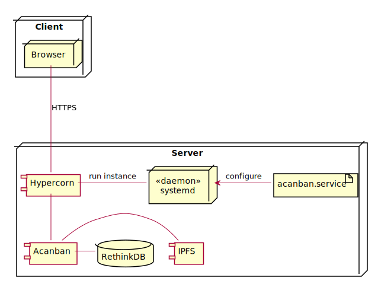

Acanban
Introduction
Objective
Building the Collaboration Platform
Features for Academic Support
Other functionalities
Constructing the Web Application
Acanban
»
Deployment
View page source
Deployment
¶

Alternative deployment model with load-balancing and a separate data server:
![node Client {
node Browser
}
node "Load Balancing Server" as balancer {
component NGINX as nginx <<load balancer>>
artifact "/etc/nginx/sites-available/acanban" as nginx_conf
}
node Server {
artifact "acanban.service" as systemd_conf
component Acanban
component Hypercorn
node systemd <<daemon>>
}
node "Database Server" as db_server {
database "RethinkDB" as db
component IPFS
}
Browser --- balancer: HTTPS
nginx <. nginx_conf: configure
nginx "1" --- "1..*" Server
Hypercorn - systemd: run instance
systemd <. systemd_conf: configure
Hypercorn -- Acanban
Acanban "1..*" -- "1" db_server](../_images/plantuml-f1f410466558b38997834fa37ab63072326d2d1b.svg)